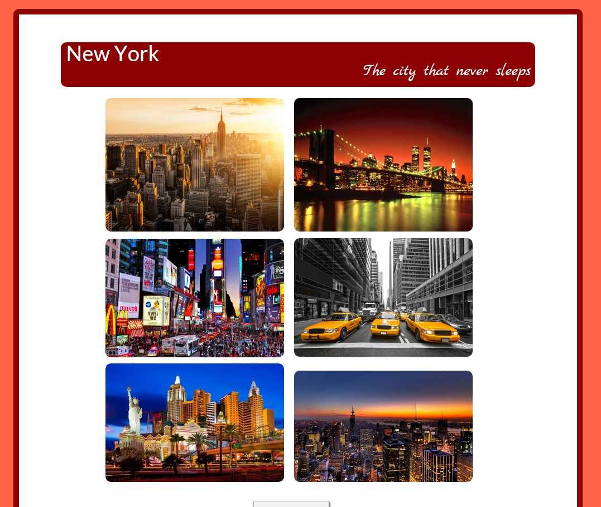

Mijn naam is Amber Bogaerts. Ik ben 18 jaar oud en woon in België. Ik zit in mijn eerste jaar Grafische en Digitale Media op Artesis Plantijn Hogeschool in Antwerpen. Deze website is mijn persoonlijke portfolio, in verband met een schoolopdracht. Hierop vind je wat meer uitleg over mijzelf, maar je kan ook een beperkt aantal uitgewerkte schoolopdrachten bekijken. Als je vragen, opmerkingen,... hebt, mag je deze altijd naar mij sturen. Deze staan onder de navigatie "Contact".
Hieronder bevinden zich een aantal gerealiseerde schoolopdrachten. Uit de vele gemaakte opdrachten heb ik er een beperkt aantal geselecteerd om in dit persoonlijke portfolio te zetten. Wil je meer zien? Dit kan, contacteer mij.

Hieronder vind je een beperkt aantal grafische en digitale werken (zoals bijvoorbeeld Photoshop Art) die op het internet veel succes hebben, mooi zijn, uniek zijn, waaruit mensen hun inspiratie kunnen halen,...
Heb je vragen of opmerkingen? Laat het mij gerust weten.